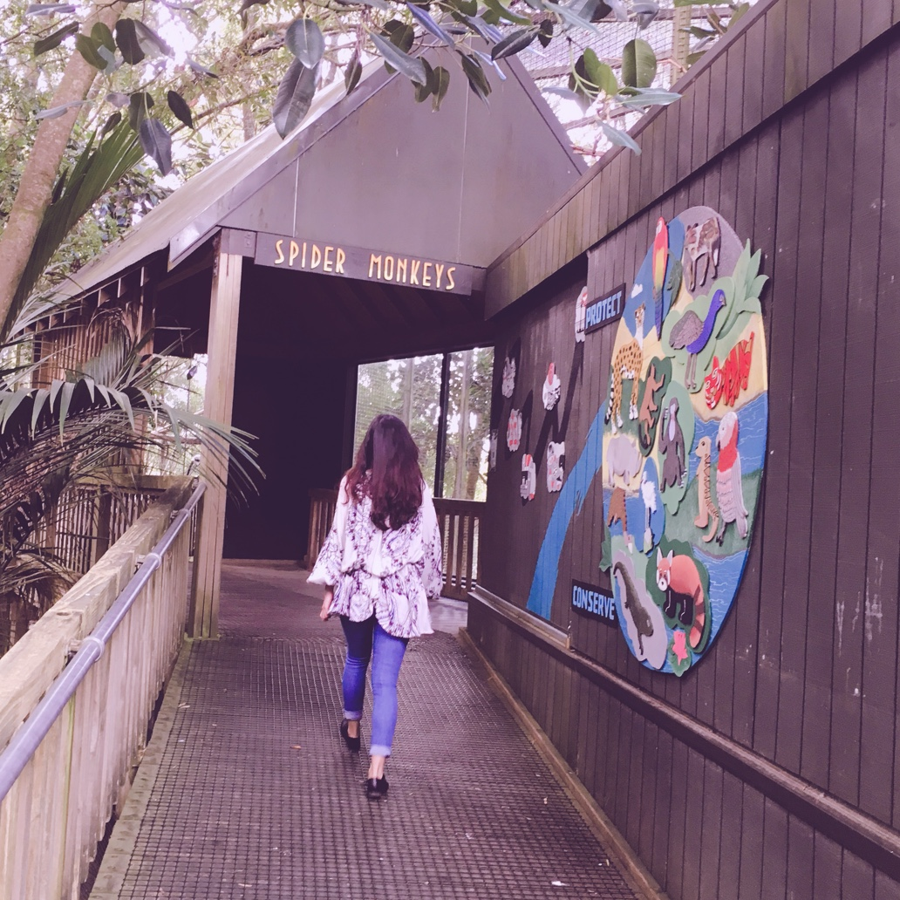
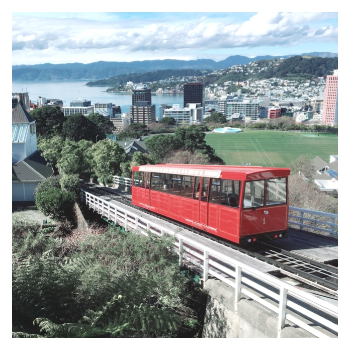

I turn problems into intuitive experience
Hello, I am Jing, a UX/UI designer originally from China and now living in Wellington, New Zealand. I’ve been practising UX/UI design for about 10 years and am passionate about solving problem with my design-thinking skills.
- 
- 
How I work
I believe that design is not just making something beautiful or even easy-to-use. It should help business achieve its goal by understanding the users.
Here is how I put my belief into practice:
- Understand the business goal. I always ask questions to find out the root problem that a business wants to solve before jumping into the solution. This step is always the key.
- Validate hypothesis through various user research activities. What a business think a problem might be is open not aligned to what the users want.
- Brainstorm and evaluate solutions. I like involving people who think differently to brainstorm solutions
- Make the solution pretty and easy to use. As you can see here, The perception that most of people have is actually a step near the end.
- Track the performance of the solution and keep iterate.
My areas
- UX design/UI design
- Interaction design
- User testing
- Wire-frame and prototyping